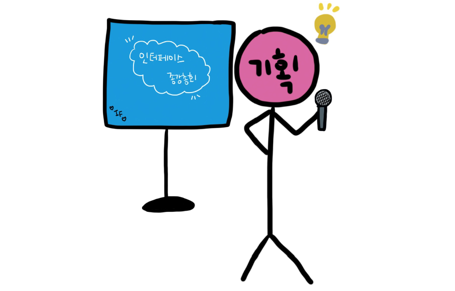

내가 인터페이스 집부가 된다면?
나에게 맞는 인터페이스 집부 역할 찾기 사이트입니다!
아래 버튼을 눌러 시작해 주세요!
인페의 아버지 '회장'
- 동아리 진행방향과 활동을 결정하는 총결정권자!
- 인터페이스를 위해 매달 중앙동아리 회의 참석 등 열일 중...
- 왕관을 쓰려는 자, 그 무게를 견뎌라!
인페의 어머니 '고문'
- 집부 유경험자로써 동아리 진행상황 점검 및 조언!
- 보이지 않는 곳에서 집부들을 품어주는 잔소리꾼(Feat. 하나부터 열가지 다 널 위한 소리~)
- 고인물(윗기수)과 맑은물(아랫기수)을 고무고무!
인페의 지갑 '총무'
- 인터페이스 회비 및 명부 관리!
- 동아리 활동에 예산 배분 및 회비 지원!
- 회비 지원 및 사용은 모두 총무 허락하에 사용 가능...
인페의 개츠비 '기획'

- 학술적 행가 이외 모든 활동들을 기획 및 진행하는 행사 관리권자!
- 개강총회, 종강총회, MT, 게임대회 등등 진행!
- 개최하고 싶은 행사가 있다면 기획 및 진행 가능!
인페의 공부천재 '학술'
- 스터디, 프전, 인커톤 등 모든 학술적 활동을 관리 및 기획!
- 인페의 학술 중 c, 고c 인증시험 만점을 받은 사람이 있었다는 전설이...(하지만 전설은 전설일 뿐!)
- 엠티와 뒤풀이에 학술의 "술" 이 빠질 순 없다! (N병은 기본...)
인페의 해그위드 '소통'
- 동아리원들에게 인페의 중요한 공지사항이나 소식을 전달!
- 공지문구를 재치있게 꾸미는 센스는 덤!
- 동아리원들이 활동 중 궁금한 일이 생긴다면 답변은 소통의 임무!
인페의 일기장 '서기'
- 동아리에서 일어나는 활동이나 회의를 기록으로 남기는 역할!
- 인터페이스 커뮤니티의 총 관리권자!
- 조선에는 사서가 쓴 조선왕조실록이 있다면, 인페에는 서기가 쓴 노션이 있지!
인페의 반장&부반장 '기장&부기장'
- 신입기수를 대표하는 기장&부기장!
- 신입생들의 동아리 활동 참여를 독려하는 역할!
- 신입생들과 집부진들을 연결해주는 까마귀 같은 존재!